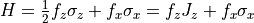
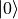
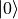
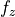
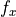

[1]:
import quanguru as qg
import numpy as np
import matplotlib.pyplot as plt
13 - Multi-parameter sweep (simultaneously)¶
In the previous tutorial, we covered multi-parameter sweep for the simulation of a single qubit with two terms in its Hamiltonian, and we set multiParam=True to label that the it was a multi-parameter sweep. multiParam is False by default, and it is useful mainly with composite quantum system or simultaneous simulation of multiple systems (which are covered later). In this tutorial, just for demonstration purpose, we explain the multiParam=False with the previous qubit
simulation. All the rest of the simulation is the same, we just remove multiParam=True, but we then need to make some relevant changes to sweepList as discussed below.
Again, we will evolve a qubit under the unitary dynamics of the Hamiltonian  with the initial state set to the equal superposition of  and . We also set the total simulation time (with
and . We also set the total simulation time (with simTotalTime) and the step size (simStepSize) as well as the compute function where we compute the expectation value of  .
.
[2]:
# create the qubit and set its initial state and frequency
qub = qg.Qubit(frequency = 1)
qub.initialState = [1, 0]
# set the simulation time and step size
qub.simTotalTime = 8*np.pi
qub.simStepSize = 0.1
# create the operators for which we compute the expectation values
sigmaX = qg.sigmax()
# write a compute function that takes two arguments: (i) a quantum-system (qsys) and (ii) a state
# compute whatever we want and store in .results
def compute(qsys, state):
qsys.results['sigmax expectation'].append(qg.expectation(sigmaX, state))
# set the compute attribute of our qubit to compute function
qub.compute = compute
# add the second term
secondTerm = qub.createTerm(operators=qg.sigmax, frequency=1)
The sweeps are created similarly to the previous tutorial, but we removed multiParam=True. Now, the sweeps will not create a nested-loop (to run the simulation for every parameter combination), but they will run simultaneously inside the same loop, therefore, the lengths of the sweepList need to be the same. Also, since they run simultaneously inside the same loop, the order in which they are created does not matter.
[3]:
# create a sweep for the the second term
freqSweepSecondTerm = qub.simulation.Sweep.createSweep(system=secondTerm, sweepKey="frequency", sweepList=np.arange(-1, 1, 0.02))
# create a sweep for the qubit frequency
freqSweepFirstTerm = qub.simulation.Sweep.createSweep(system=qub, sweepKey="frequency", sweepList=np.arange(-1, 1, 0.02))
At this point, all the essential information are set, and we can run the simulation by qub.runSimulation(). We again set simDelState = True (to discard the states) and p = True (for multi-processing of the sweep).
[4]:
qub.simDelStates = True
states = qub.runSimulation(p=True)
Now, we receive the results that we stored again as qub.results['sigmax expectation'], which returns a list of list, each of which is a time trace corresponding to the frequencies swept for  and .
As expected, the expectation value of oscillates with different frequencies.
[5]:
Y, X = np.meshgrid(qub.simulation.timeList, freqSweepFirstTerm.sweepList)
plt.pcolormesh(X, Y, qub.results['sigmax expectation'])
plt.xlabel("Frequency $f_{z}$ and $f_{x}$")
plt.ylabel("Time")
[5]:
Text(0, 0.5, 'Time')

Now, we receive the results that we stored again as qub.results['sigmax expectation'][1] for the second value, which returns a list of list, each of which is a time trace corresponding to the frequencies swept for .
As expected, the expectation value of oscillates with different frequencies.
[ ]: